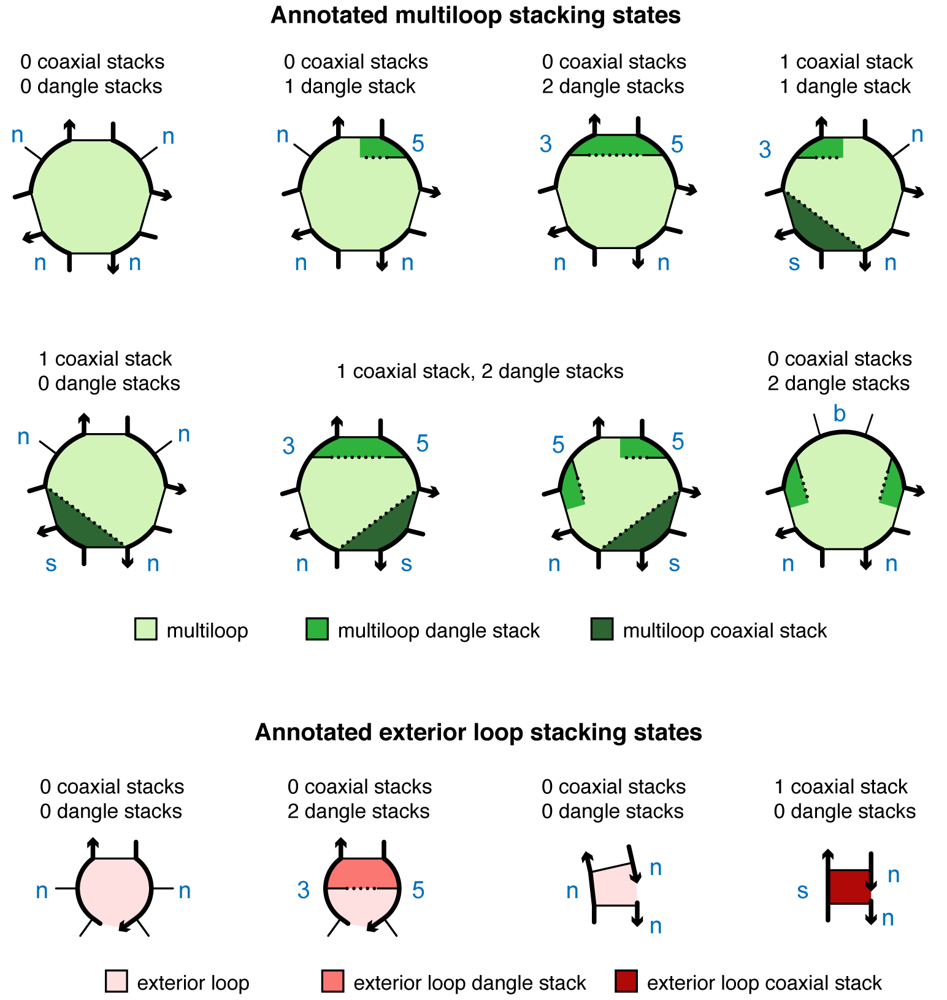

Model Specification¶
Specify a physical model¶
NUPACK 4 analysis and design jobs are run based on a physical model created using the Model class:
model1 = Model(material='rna', ensemble='stacking', celsius=37,
sodium=1.0, magnesium=0.0)
Any unspecified properties take on their default values (which happen to be the ones specified for model1 above).
Model options¶
The valid options for each property are described below.
Material¶
NUPACK 4.1 algorithms use the following temperature-dependent free energy parameter sets for single-material jobs (RNA, DNA, or 2’OMe-RNA), mixed-material jobs (RNA/DNA or RNA/2’OMe-RNA), or custom-material jobs, specified by the keyword material (default: material='rna'):
- RNA single-material parameter sets:
rnaShorthand forrna06.rna06Based on [Mathews99] and [Lu06] with additional parameters [Xia98,Zuker03] including coaxial stacking [Mathews99,Turner10] and dangle stacking [Serra95,Zuker03,Turner10] in a user specified concentration of Na^+.rna95Based on [Serra95] with additional parameters [Zuker03] including coaxial stacking [Mathews99,Turner10] and dangle stacking [Serra95,Zuker03,Turner10] in 1.0 M Na^+.
- DNA single-material parameter sets:
dnaShorthand fordna04.2.dna04.2Updated GT internal mismatch values [Allawi97,Allawi98a,Allawi98b,Allawi98c,Peyret99,SantaLucia04], internal asymmetry values [SantaLucia04], and terminal mismatch values [Turner10,Mittal24]; in user-specified concentrations of Na^+, K^+, NH^+_4 and Mg^{++} [SantaLucia98,Peyret00,SantaLucia04].dna04.1Based on [SantaLucia98] and [SantaLucia04] with additional parameters [Zuker03] including coaxial stacking [Peyret00] and dangle stacking [Bommarito00,Zuker03] in user-specified concentrations of Na^+, K^+, NH^+_4 and Mg^{++} [SantaLucia98,Peyret00,SantaLucia04].
- 2'OMe-RNA single-material parameter sets:
merna06Based on [Kierzek06] using stack loop, coaxial stacking, terminal base pair, and strand association values fromrna_merna06and all other values fromrna06; in 0.12 M Na^+.
- RNA/DNA mixed-material parameter sets:
rna_dna06Using hybrid stack loops [Sugimoto95], hybrid internal mismatches [Watkins11,Sugimoto00], and chimeric stack loops [Nakano04] with additional parameters for mixed-material loops [Nanjundiah25] in a user-specified concentration of Na^+; for use in conjunction with single-material parameter setsrna06anddna04.
- RNA/2'OMe-RNA mixed-material parameter sets:
rna_merna06Based on hybrid stack loops [Kierzek06] with additional parameters for mixed-material loops [Nanjundiah25]; for use in conjunction with single-material parameter setsrna06andmerna06in 0.12 M Na^+.
- Custom parameter sets:
custom-parametersCustom parameters provided in a JSON file (e.g.,custom-parameters.json) using the same format as the provided parameter files. Provide \DeltaG_{37}(loop) and \DeltaH(loop) values to allow calculations at different temperatures or only \DeltaG(loop) values to allow calculations at one temperature. Place the JSON file in the same directory as the default parameter files (specifymaterial = 'custom-parameters') or specify the full path to the file (material = 'path/to/my/custom-parameters.json').
Free energies are expressed in kcal/mol. Base pairs are either Watson-Crick pairs or wobble pairs.
Stacking¶
NUPACK 4 algorithms perform calculations on the following complex ensembles specified by the keyword ensemble (default: ensemble='stacking'):
-
stackingComplex ensemble with coaxial and dangle stacking (ensemble \overline\Gamma^\shortparallel(\phi)). -
dangle-stackingComplex ensemble with dangle stacking. -
coaxial-stackingComplex ensemble with coaxial stacking. -
nostackingComplex ensemble without coaxial and dangle stacking (ensemble \overline\Gamma(\phi)).
Temperature¶
celsiusTemperature is specified in ^\circC using the keywordcelsius(default:celsius=37).kelvinAlternatively, the temperature can be specified in K using the keywordkelvin.
Salts¶
NUPACK 4.1 algorithms support the following salt conditions:
- For RNA single-material jobs using
rna06:sodiumBased on [Nanjundiah25], the concentration of sodium ions, [Na^+], is specified in units of molar (default: 1.0, range: [0.05,1.0]) using the keywordsodium.magnesiumOnly 0.0 M [Mg^{++}] is supported.
- For RNA single-material jobs using
rna95, the only supported salt conditions [Mathews99, Lu06] are 1.0 M [Na^+]. - For DNA single-material jobs using
dna04.1/dna04.2:sodiumBased on [SantaLucia98,SantaLucia04], the sum of the concentrations of (monovalent) sodium, potassium, and ammonium ions, [Na^+]+[K^+]+[NH^+_4], is specified in units of molar (default: 1.0, range: [0.05,1.1]) using the keyword sodium.magnesiumBased on [Peyret00,Koehler05], the concentration of (divalent) magnesium ions, [Mg^{++}], is specified in units of molar (default: 0.0, range: [0.0,0.2]) using the keywordmagnesium.
- For 2’OMe-RNA single-material jobs [Kierzek06] using
merna06, the only supported salt conditions are 0.12 M [Na^+]. - For RNA/DNA mixed-material jobs using
rna_dna06:sodiumBased on [Nanjundiah25], the concentration of sodium ions, [Na^+], is specified in units of molar (default: 1.0, range: [0.12,1.0]) using the keywordsodium.magnesiumOnly 0.0 M [Mg^{++}] is supported.
- For RNA/2’OMe-RNA mixed-material jobs [Kierzek06] using
rna_merna06, the only supported salt conditions are 0.12 M [Na^+].
Examples
- Define a model for DNA calculations at 23 ^\circC in [{\rm Na}^{+}]= 0.5 M and [{\rm Mg}^{++}]= 0.01 M:
model2 = Model(material='dna', celsius=23, sodium=0.5, magnesium=0.01)
ensemble is unspecified so it defaults to ensemble='stacking'.
- Define a model using custom parameters at 45 ^\circC without coaxial and dangle stacking:
model3 = Model(material='path/to/my/custom-parameters.json',
ensemble='nostacking', celsius=45)
Historical options¶
For backwards compatibility with NUPACK 3, the following historical complex ensembles without coaxial stacking and with approximate dangle stacking are supported:
-
none-nupack3No dangle stacking and no coaxial stacking (danglesnoneoption for NUPACK 3) -
some-nupack3Some dangle stacking and no coaxial stacking (danglessomeoption for NUPACK 3). A dangle energy is incorporated for each unpaired base flanking a duplex (a base flanking two duplexes contributes only the minimum of the two possible dangle energies). -
all-nupack3All dangle stacking and no coaxial stacking (danglesalloption for NUPACK 3). A dangle energy is incorporated for each unpaired base flanking a duplex (a base flanking two duplexes contributes both possible dangle energies).
For these historical ensembles, base pairs are either Watson-Crick pairs (G\cdotC and A\cdotU for RNA; G\cdotC and A\cdotT for DNA) or wobble pairs (G\cdotU for RNA; G\cdotT for DNA). Note that for the historical ensembles, G\cdotT is classified as a DNA wobble pair and not as a mismatch. The historical ensembles prohibit a wobble pair (G\cdotU or G\cdotT) as a terminal base pair in an exterior loop or a multiloop. As a result, an attempt to evaluate a free energy for a sequence \phi and secondary structure s that place a wobble pair as a terminal base pair in an exterior loop or multiloop will return \overline{\Delta G}(\phi,s)=\Delta G(\phi,s) = \infty. These historical ensembles can be used for calculations in combination with the following historical DNA and RNA parameter sets:
-
rna95-nupack3Same asrna95except that terminal mismatch free energies in exterior loops and multiloops are replaced by two dangle stacking free energies. -
dna04-nupack3Same asdna04except that G\cdotT was treated as a wobble pair (analogous to aG\cdotURNA wobble pair) instead of classifyingGandTas a mismatch. Note that while terminal mismatch free energies in exterior loops and multiloops are replaced by two dangle stacking free energies, this is the same treatment as indna04, as terminal mismatch parameters are not public for DNA [SantaLucia04]. -
rna99-nupack3Parameters from [Mathews99] with terminal mismatch free energies in exterior loops and multiloops replaced by two dangle stacking free energies. Parameters are provided only for 37 ^\circC.
Compute loop free energy¶
The loop_energy method operates on a Model object to calculate the loop free energy in kcal/mol. The loop sequence is specified with keyword loop and the loop structure is specified with keyword structure. For example:
my_model = Model(material='RNA', ensemble='stacking')
#Calculate the free energy of an unstructured strand
dGloop2 = my_model.loop_energy(loop='AAUU', structure='....')
print(dGloop2)
# --> 0.0
#Calculate the free energy of a hairpin loop
dGloop3 = my_model.loop_energy(loop='AACCCUU', structure='(.....)')
print(dGloop3)
# --> 5.15
#Calculate the free energy of an exterior loop
dGloop4 = my_model.loop_energy(loop='AA+UU', structure='((+))')
print(dGloop4)
# --> -0.9
#Calculate the free energy of a multiloop
dGloop5 = my_model.loop_energy(loop='AAU+ACU+AGU', structure='(.(+).(+).)')
print(dGloop5)
# --> 9.355
Compute stacking state free energies¶
The stack_energies method operates on a Model object to calculate the stacking state free energies for the subensemble of stacking states in a single loop. The loop sequence is specified with keyword loop and the loop structure is specified with keyword structure. The algorithm returns a list of stacking states and the free energy for each in kcal/mol.
For a loop defined as a list of N snippets, a stacking state is specified as a string composed of one letter per snippet. For each snippet, the returned letter is:
's'if the snippet contains only 2 nucleotides, each base-paired to a nucleotide in the adjacent snippet, with the two base pairs coaxially stacked on each other'b'if both the 5' and 3' unpaired nucleotides are dangle stacking on adjacent base pairs'5'if only the 5'-most unpaired base is dangle stacking on its adjacent base pair'3'if only the 3'-most unpaired base is dangle stacking its adjacent base pair'n'if none of the above apply (i.e., the snippet does not have a dangle at either the 5' or 3' end nor does it contain only 2 adjacent nucleotides participating in a coaxial stack)
For example, the following figures illustrate snippet annotations for coaxial and dangle stacking states in representative multiloops and exterior loops:

For a specified multiloop or exterior loop sequence and structure, the stack_energies method returns a set of stacking state strings each with a corresponding stacking state free energy (kcal/mol):
# Calculate the dangle stacking state free energies for an exterior loop
my_model.stack_energies(loop='CA+UC', structure='.(+).')
# --> {'35': -0.15, '3n': 0.15, 'n5': 0.35, 'nn': 0.45}
# Calculate the coaxial stacking state free energies for an exterior loop
my_model.stack_energies(loop='AA+U+U', structure='((+)+)')
# --> {'nnn': 0.9, 'snn': 0.0}
# Calculate the coxial stacking state free energies for a multiloop
my_model.stack_energies(loop='AU+AU+AU', structure='((+)(+))')
# --> {'nnn': 11.9725, 'nns': 10.8725, 'nsn': 10.8725, 'snn': 10.8725}
For loops that are not multiloops or exterior loops, the loop free energy is returned with a string indicating that there is no stacking state. For example, for a hairpin loop:
my_model.stack_energies(loop='AAAAU', structure='(...)')
# --> {'n': 5.85}
| Mathews99 | Mathews D.H., Sabina J., Zuker M., Turner D.H.: Expanded sequence dependence of thermodynamic parameters improves prediction of RNA secondary structure. J. Mol. Biol.. 288, (1999) |
| Lu06 | Lu Z.J., Turner D.H., Mathews D.H.: A set of nearest neighbor parameters for predicting the enthalpy change of RNA secondary structure formation. Nucleic acids research. 34, (2006) |
| Xia98 | Xia T., SantaLucia J., Burkard M., Kierzek R., Schroeder S., Jiao X., Cox C., Turner D.: thermodynamic parameters for an expanded nearest-neighbor model for formation of RNA duplexes with Watson-Crick base pairs. Biochemistry. 37, (1998) |
| Zuker03 | Zuker M.: Mfold web server for nucleic acid folding and hybridization prediction. Nucleic Acids Res.. 31, (2003) |
| Turner10 | Turner D.H., Mathews D.H.: NNDB: the nearest neighbor parameter database for predicting stability of nucleic acid secondary structure. Nucleic Acids Res.. 38, (2010) |
| Serra95 | Serra M.J., Turner D.H.: Predicting thermodynamic properties of RNA. Methods Enzymol.. 259, (1995) |
| Allawi97 | Allawi H.T., SantaLucia J.: Thermodynamics and NMR of internal G.T mismatches in DNA. Biochemistry. 36, (1997) |
| Allawi98a | Allawi H.T., SantaLucia J.: Thermodynamics of internal C.T mismatches in DNA. Nucleic Acids Res.. 26, (1998) |
| Allawi98b | Allawi H.T., SantaLucia J.: Nearest neighbor thermodynamic parameters for internal G.A mismatches in DNA. Biochemistry. 37, (1998) |
| Allawi98c | Allawi H.T., SantaLucia J.: Nearest-neighbor thermodynamics of internal A.C mismatches in DNA: sequence dependence and pH effects. Biochemistry. 37, (1998) |
| Peyret99 | Peyret N., Seneviratne P.A., Allawi H.T., SantaLucia J.: Nearest-neighbor thermodynamics and NMR of DNA sequences with internal A.A, C.C, G.G, and T.T mismatches. Biochemistry. 38, (1999) |
| SantaLucia04 | SantaLucia J., Hicks D.: The thermodynamics of DNA structural motifs. Annu. Rev. Biophys. Biomol. Struct.. 33, (2004) |
| Mittal24 | Mittal A., Turner D.H., Mathews D.H.: NNDB: An expanded database of nearest neighbor parameters for predicting stability of nucleic acid secondary structures. J. Mol. Biol.. 436, (2024) |
| SantaLucia98 | SantaLucia J.: A unified view of polymer, dumbbell, and oligonucleotide DNA nearest-neighbor thermodynamics. Proc. Natl. Acad. Sci. USA. 95, (1998) |
| Peyret00 | Peyret N.: Prediction of nucleic acid hybridization: Parameters and algorithms. (2000) |
| Bommarito00 | Bommarito S., Peyret N., SantaLucia J.: Thermodynamic parameters for DNA sequences with dangling ends. Nucleic Acids Res.. 28, (2000) |
| Kierzek06 | Missing citation |
| Sugimoto95 | Missing citation |
| Watkins11 | Missing citation |
| Sugimoto00 | Missing citation |
| Nakano04 | Missing citation |
| Nanjundiah25 | Nanjundiah A., Fornace M.E., Schulte S.J., Pierce N.A.: Models and algorithms for equilibrium analysis of mixed-material nucleic acid systems. bioRxiv. (2025) |
| Koehler05 | Koehler R.T., Peyret N.: Thermodynamic properties of DNA sequences: Characteristic values for the human genome. Bioinformatics. 21, (2005) |